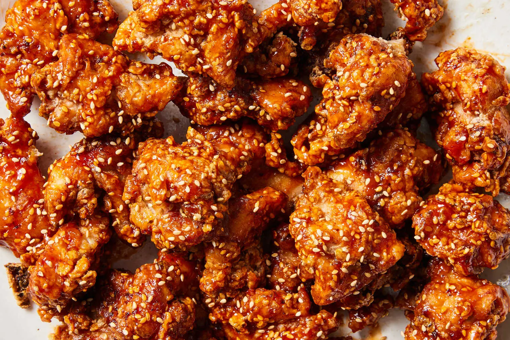

Spicy Korean Fried Chicken (Yangnyeom-tongdak 양념통닭)

Yangnyeom-tongdak is a Korean dish featuring crispy fried chicken coated in a sticky,
spicy-sweet sauce made from gochujang, garlic, and various seasonings.
This flavorful dish is celebrated for its addictive balance of heat and sweetness,
making it a beloved favorite in Korean cuisine.
Ingredients
- 900 g chicken wings
- ½ Tsp kosher salt
- ½ Tsp ground black pepper
- 60 g potato starch
- 30 g all-purpose flour
- ½ Tsp baking soda
- 2 large eggs
- 1 Tbsp toasted sesame seeds
For the sauce
- 2 Tsp vegetable oil
- 3 garlic cloves, minced
- 80 ml ketchup
- 80 ml rice syrup
- 60 g gochujang (Korean hot pepper paste)
- 2 Tsp white vinegar
- 2 Tsp vegetable oil
- Corn (or vegetable) oil for frying
Steps
- Heat 5 cm of oil in a large heavy frying pan or pot over medium-high heat for about 10 to 12 minutes until the oil temperature reaches 165-175ºC. I used my 30 cm pan, but if your pan is smaller, work in batches. If you don’t have a thermometer, test it by dipping one piece of chicken in the oil. If it bubbles, it is ready.
- While the oil is heating, combine chicken, salt, ground black pepper, starch, flour, baking soda, and eggs in a large bowl. Mix altogether well by hand.
- Add the coated chicken to hot oil one by one. Fry them for 12 minutes until all sides of the chicken are golden brown and crunchy, turning over with tongs.
- Take out the chicken with tongs or a large slotted spoon to a wire strainer over a bowl to remove the excess oil.
- Heat 10 ml vegetable oil in a large skillet over medium-high heat. Stir in garlic until light brown for about 30 seconds. Add the ketchup, rice syrup, gochujang, vinegar, and stir well with a wooden spoon. Reduce the heat to low and stir until bubbling. Remove from the heat.
- Let the oil heat up for 2 minutes over medium-high heat until it reaches 165-175ºC.
- Fry the chicken one more time, turning over with tongs for about another 12 minutes until very crunchy.
- Reheat the sauce over medium-high heat until it's bubbling again. Add all the hot crunchy chicken and mix well with a wooden spoon and tongs.
- Sprinkle with the sesame seeds and transfer to a serving plate. Serve with chicken-mu (pickled radish) if you have it.